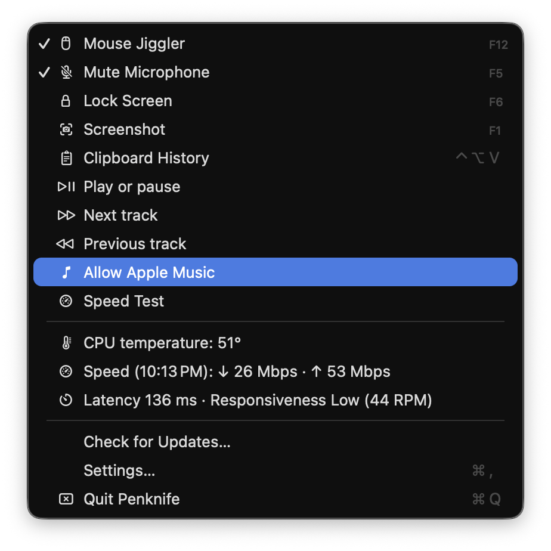
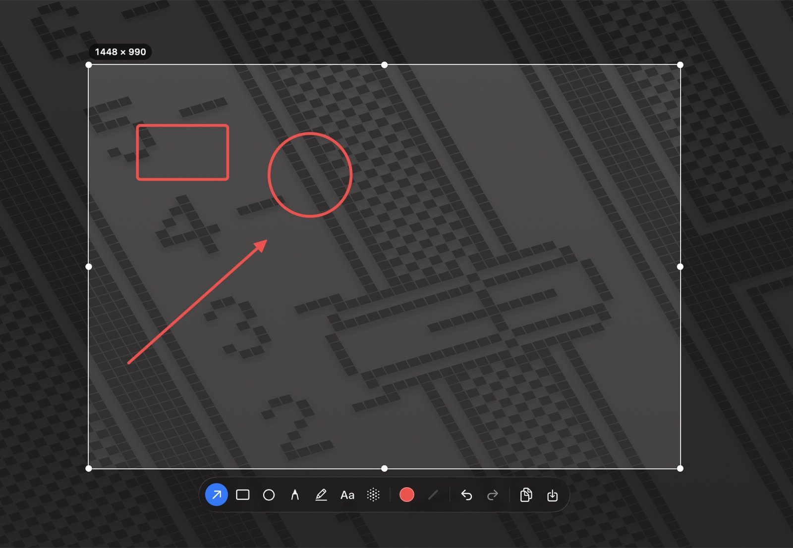
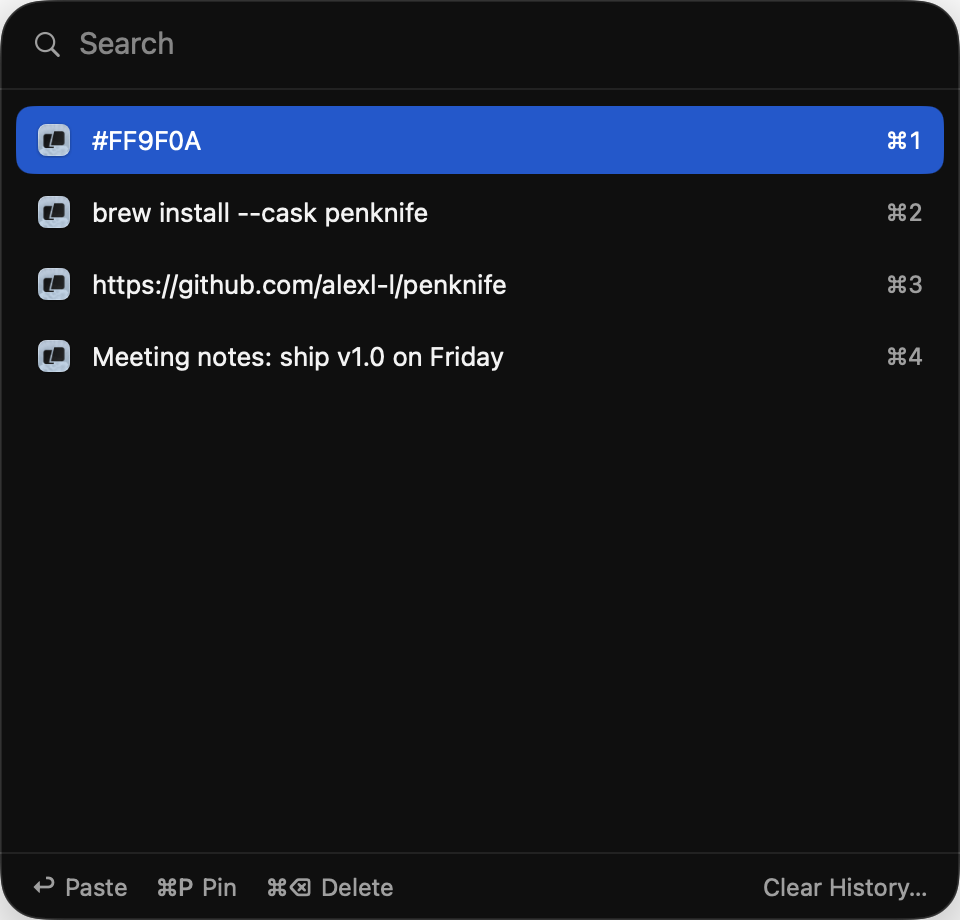
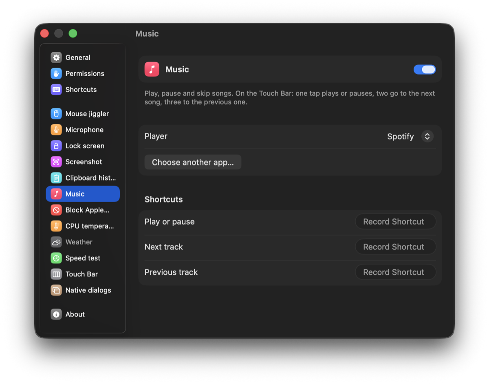
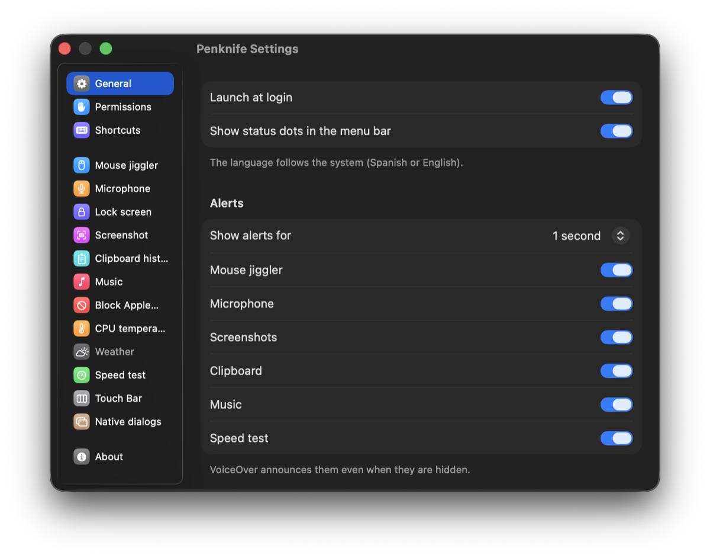

Mute the right meeting
One shortcut mutes the meeting you're in: Teams, Google Meet, Zoom, Slack Huddles or Webex. Only apps in a call count, and each uses its own shortcut, editable in Settings. With no call, it mutes your Mac's microphone. Also in the menu: mouse jiggler, lock screen and a speed test, each with its own shortcut.

Screenshot editor
Select an area or a window, mark it with arrows, text, highlighter, shapes, pen and blur, then copy or save. Nothing is uploaded.

Clipboard history
Search, pin what you reuse and paste with ⌘1–⌘9. Passwords and other concealed items are never saved.

Music
Play, pause and skip in the player you choose. Headphone clicks go there, and Apple Music no longer opens by itself.

Settings
One window in the style of System Settings. Every module on or off, each with its own shortcut.

Have a Touch Bar?
Penknife adds its own: brightness, keyboard light, volume, music, weather, CPU temperature, battery, speed test and time, one tap away. You choose the buttons and their order.
Touch Bar game
Hold the mouse jiggler button for 3 seconds and slice fruit. About 4 % CPU while you play.